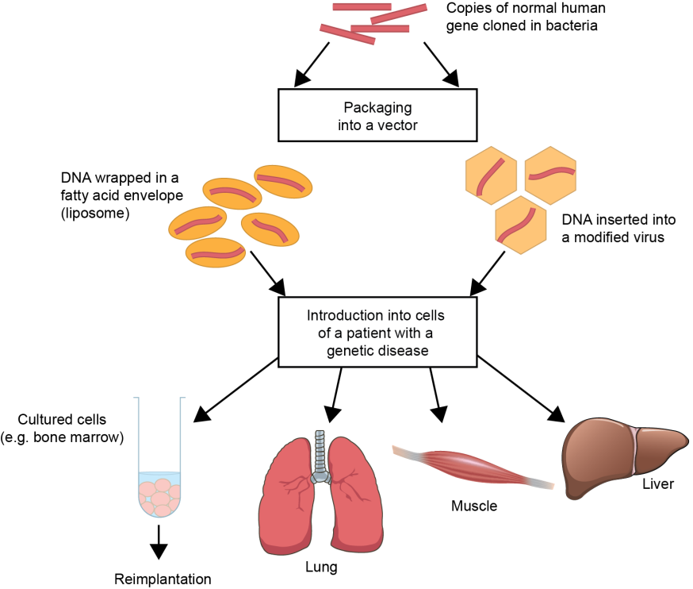

- Somatic gene therapy procedure involves introducing healthy genes cloned in bacteria into the cells of a patient in order to treat their illness (The Open University, 2019). The DNA is typically inserted into a virus' genetic code or wrapped in liposomes, which resemble fat, to achieve this. As outlined in Figure 1 The bone marrow, lungs, muscles, or liver are the target tissues that are most frequently used. Since bone marrow can be easily isolated and distributed back into the blood, it is frequently used (The Open University, 2019).
Figure 1: Somatic Gene Therapy
-Based on the type of cell being edited, the type and extent of editing, and the therapeutic use, gene editing of somatic cells may have unfavourable effects. To treat illnesses including leukaemia and HIV, somatic gene editing has been used in clinical trials (Kohn et al., 2016). In the clinical trial for leukaemia, allogeneic T cells were utilised to alter the endogenous T-cell receptor gene, preventing alloreactivity in the process. Therapy has been developed for a variety of disorders thanks to medical interventions and developments in somatic gene editing (Kohn et al., 2016). The application of somatic gene editing for enhancing objectives is the area of research that prompts worry and ethical discussion. Enhancement gene editing refers to genetic alterations for non-heritable purposes such as height, intelligence, or other physical or cosmetic improvements (Kohn et al., 2016). Improvement of any genetic makeup that differs from the typical human genome is described as enhancement in the technical terminology. Unintended consequences might arise from changes made to a genome since the idea for doing so is not fully understood (Kohn et al., 2016).
- Moreover, the issue that is being looked into is the technology's safety (The Guardian, 2015). Somatic gene editing has a major ethical problem known as "off-targeted" editing errors, which involve cutting, selecting, or altering the wrong portion of DNA (The Guardian, 2015). The presumptions of determining what gene features are "normal" and whether any variation from the norm should be categorised as a disease present another ethical challenge with somatic gene editing. The genetic condition of deafness is a frequent illustration used to support this ethical contention (Kohn et al., 2016). Some view this genetically based condition as an illness, while others view it as a trait that promotes diversification (National Academies of Sciences, Engineering, and Medicine, 2017). Particularly for members of this community, the notion that this condition is an illness that has to be treated can be considered disrespectful (Kohn et al., 2016).. Therefore, any somatic gene editing augmentation treatment should adhere to ethical issues such as an acceptable risk/benefit ratio, informed consent, and regulatory authorisation (Kohn et al., 2016).